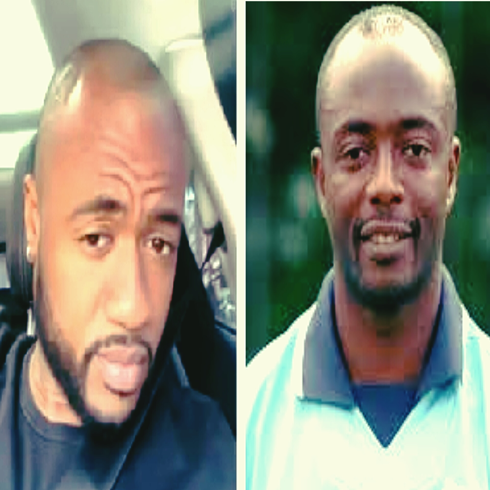

Jordan Ayew goes uncovered, follows Abedi Pele's strides
Ghana forward Jordan Ayew has continued in the strides of his more established sibling Andre Ayew by embracing an uncovered look. The 32-year-old, who has consistently liked to safeguard his hair in spite of imparting numerous likenesses to his sibling, including matching tattoos, has now embraced the 'Santo' hair style. This change comes after a strong season in the Primiere League, where Jordan assumed a vital part in assisting Gem Royal residence with keeping up with their first class status. In a video shared on X by Fiifi Tackie, the representative for the Ayew family, Jordan is seen with his new uncovered look, gladly flaunting his trim. "Jordan Ayew has continued in the strides of his unbelievable dad, Abedi Pele, and joined the regarded positions of Ghanaian footballers who sport the notable 'Santo' hair style. He's following some great people's example, close by his sibling Andre Ayew and Stephen Appiah," Fiifi composed close by the video. Jordan had a praiseworthy season with Crystal Palace, scoring four objectives and giving eight helps across all rivalries, with seven in the Premiere League. The previous Aston Villa and Swansea City forward's new look denotes one more section in his football process, mirroring his family legacy and individual advancement.
Read again